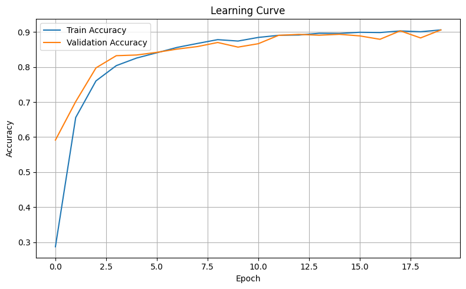
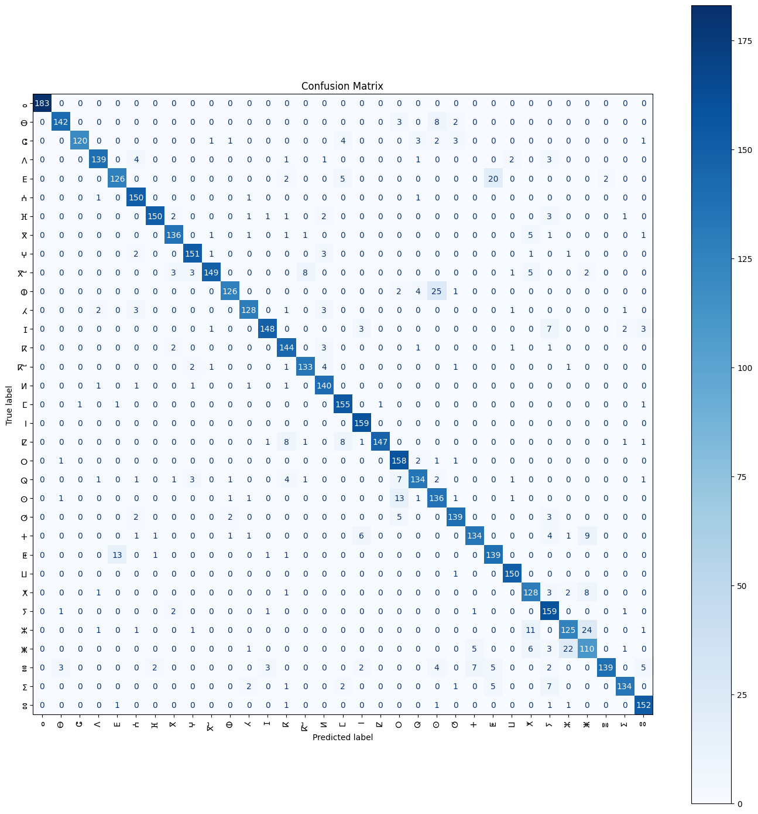
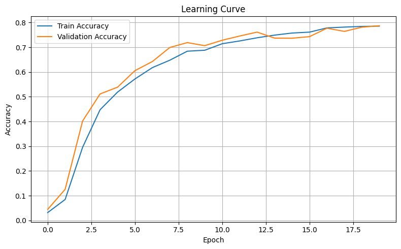
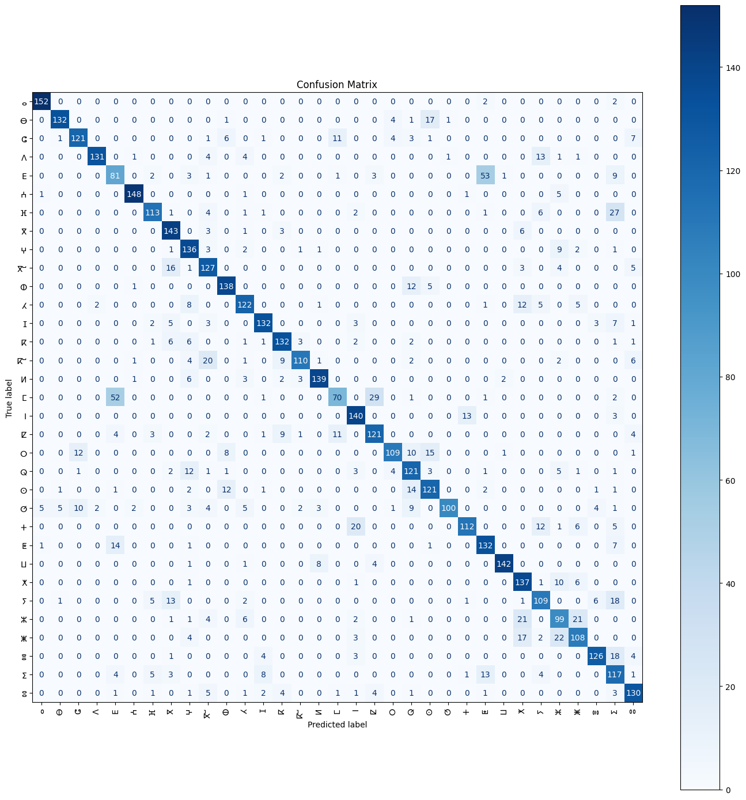

Données
- Source:
AMHCD_64 (Arabic and Handwritten Character Dataset)
- Classes:
33 caractères Tifinagh courants
- Taille du dataset:
Total: 25,740 images (20,592 train / 5,148 validation)
- Prétraitement:
Redimensionnement à 32x32 pixels
Normalisation des valeurs de pixel entre -1 et 1 (PyTorch) ou 0 et 1 (TensorFlow)
Modèles MLP
- Architecture Commune (PyTorch et TensorFlow)
- Couche d'entrée: Flatten (3072 dimensions pour 32x32x3)
- Couche cachée 1: 64 neurones, ReLU
- Couche cachée 2: 32 neurones, ReLU
- Couche de sortie: 33 neurones (pas de softmax)
- Spécificités par Framework
- PyTorch
- Optimiseur: Adam (lr=0.001)
- Fonction de coût: CrossEntropy + L2 Regularization (λ=0.001)
- Entraînement: 20 epochs, batch_size=64
- TensorFlow/Keras
- Optimiseur: Adam (lr=0.001)
- Fonction de coût: SparseCategoricalCrossentropy (from_logits=True) avec L2 Regularization
- Entraînement: 20 epochs, batch_size=64
Résultats
- PyTorch
- Meilleure précision:
- Train: 90.59%
- Validation: 90.58%
- Courbe d'apprentissage:
- Convergence rapide (atteint ~80% en 5 epochs)
- Pas de sur-apprentissage marqué
- Très bon alignement train/val en fin d'entraînement
- TensorFlow
- Meilleure précision:
- Train: 78.54%
- Validation: 78.69%
- Courbe d'apprentissage:
- Convergence plus lente que PyTorch
- Écart plus important entre train/val
- Performances globalement inférieures à PyTorch
Observations
- Performance: L'implémentation PyTorch a significativement surpassé TensorFlow (différence de ~12%)
- Vitesse: PyTorch s'est montré plus rapide malgré une implémentation manuelle plus complexe
- Stabilité: Les deux modèles ont montré une bonne stabilité grâce à la régularisation L2
- Sur-apprentissage: Mieux contrôlé dans l'implémentation PyTorch
Recommandations
- Pour ce projet: Préférer l'implémentation PyTorch pour ses meilleures performances
1. Courbe de précision Version PyTorch

2. Matrice de confusion Version PyTorch

3. Courbe de précision Version tensorflow

4. Matrice de confusion Version tensorflow
